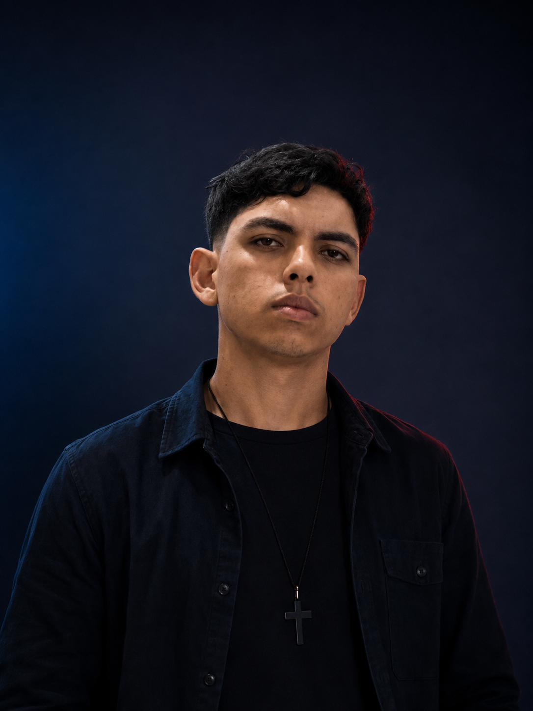

Olá, eu sou
Raphael Sillva
Desenvolvedor Full Stack
Desenvolvo sites, landing pages e sistemas web que unem estratégia, experiência e tecnologia para fortalecer marcas e transformar presença digital em oportunidades.
Sua presença digital transmite a mesma qualidade que sua empresa entrega?
Disponível para projetos no Brasil e no exterior
Desde 2022atuando e desenvolvendo soluções digitais
Sobre mim
Curiosidade para explorar.
Estratégia para construir.

Sou desenvolvedor Full Stack e UI/UX Designer. Uno técnica, criatividade e visão de negócio para entender cada desafio antes de construir uma solução.
Minha trajetória reúne experiências em mecatrônica, manutenção, indústria, empreendedorismo e tecnologia. Essa combinação ampliou minha visão sobre processos, pessoas e produtos — e hoje orienta a forma como penso interfaces, código e negócios.
Gosto de explorar problemas difíceis, estruturar lógicas e questionar caminhos conhecidos. Esse olhar ajuda a criar soluções personalizadas, coerentes com o contexto e alinhadas aos objetivos de cada projeto.
Manifesto
Conhecimento transforma
limites em possibilidades.
Questionar o que parece definitivo.
Explorar além da primeira resposta.
Conectar técnica, design e contexto.
Construir soluções que geram movimento.
Tecnologias
Ferramentas escolhidas pelo
contexto do projeto.
Conhecimento aplicado para construir experiências responsivas, acessíveis, seguras e preparadas para evoluir — sem porcentagens artificiais.
Front-end
- HTML5
- CSS3
- JavaScript
- DOM
- APIs
- Responsividade
Back-end & Dados
- Python
- JSON
- Manipulação de dados
- Automação de processos
Desenvolvimento
- Git
- GitHub
- Depuração
- Integrações
- Segurança aplicada
UI/UX
- Interfaces
- Prototipação
- Arquitetura visual
- Acessibilidade
- Experiência do usuário
Projetos conceituais
Problemas transformados em
experiências digitais.
Estudos que demonstram como estratégia, interface e desenvolvimento podem responder a desafios de presença digital, gestão e dados. Nenhum card representa um cliente ou entrega comercial concluída.
Serviços
Soluções digitais alinhadas aos
objetivos da sua empresa.
Seu site apenas apresenta sua empresa ou conduz o visitante até uma ação?
Landing Pages
Páginas focadas em apresentar sua oferta com clareza, fortalecer a confiança e aumentar o potencial de conversão.
Transformar cliques em oportunidades ↗Sites Institucionais
Sites profissionais que fortalecem a credibilidade da marca e facilitam o caminho entre o visitante e o contato.
Fortalecer minha presença digital ↗Sistemas Web
Soluções sob medida para organizar processos, reduzir tarefas repetitivas e apoiar o crescimento da operação.
Modernizar meus processos ↗Dashboards
Informações transformadas em uma visão clara do negócio para acompanhar indicadores e apoiar decisões.
Dar visibilidade aos meus dados ↗UI/UX
Interfaces intuitivas que valorizam a primeira impressão, reduzem barreiras e conduzem o usuário com clareza.
Melhorar minha experiência digital ↗Automação & Dados
Organização e automação de rotinas para reduzir esforço manual, melhorar consistência e liberar tempo para o que importa.
Analisar uma automação ↗Desenvolvimento sob medida
Uma solução personalizada, construída a partir do seu desafio, contexto e objetivo de negócio.
Falar sobre meu projeto ↗Minha trajetória
Experiências que formaram
minha visão técnica.
Mecatrônica, manutenção, indústria, dados e empreendedorismo contribuíram para uma forma multidisciplinar de resolver problemas.
-
Programação como nova direção
Início aprofundado nos estudos de desenvolvimento e construção de interfaces web.
-
Dados e segurança
Exploração de Python, manipulação de dados e fundamentos de avaliação de vulnerabilidades em ambientes educacionais e autorizados.
-
Apoio a e-commerce
Filtragem e organização de dados relacionados a produtos e estoque.
-
Visão multidisciplinar
Contato com mecatrônica, manutenção de telefones, operação de máquinas, indústria e empreendedorismo.
-
Desenvolvimento e liderança
Prestação de serviços para uma gráfica, construção de projetos e organização de uma pequena equipe ligada a tecnologia e negócios.
Formação contínua
Base técnica e aprendizado
aplicado à prática.
Conhecimentos construídos por cursos, formação técnica e exploração responsável de diferentes áreas.
Técnico em Mecatrônica
Formação que fortaleceu raciocínio técnico, visão de processos e resolução estruturada de problemas.
Front-end
Estudos em HTML, CSS e JavaScript, incluindo formação e conteúdos da Serliv quando correspondentes.
Python & Dados
Cursos e prática voltados à manipulação, filtragem, organização de dados e automação de tarefas.
Segurança
Estudos de testes e exploração de vulnerabilidades exclusivamente em ambientes educacionais e autorizados.
Conversa estratégica
Vamos descobrir o potencial
do seu projeto?
Uma conversa inicial para entender sua empresa, seus objetivos e o que pode ser melhorado na sua presença digital.
Sua próxima oportunidade pode começar aqui.
Conte um pouco sobre sua ideia, empresa ou desafio. Vou
analisar suas necessidades e entrar em contato para conversarmos
sobre melhorias e a solução digital mais adequada ao seu objetivo.